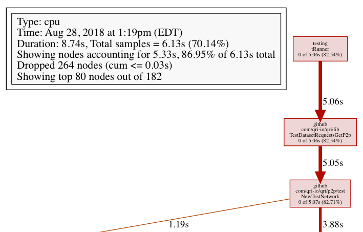
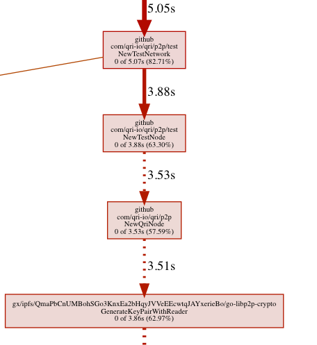

Hi, I’m Dustin, and I work on Qri, helping build our tool for reusable, reproducible, reliable datasets on IPFS. My focus since joining earlier this year has been improving the stability and especially the performance of our application backend. A few months into working on this task, I was especially pained at how slow our entire unit test suite was taking to run - up to nearly 5 minutes on my machine. I decided to dig in and see what was causing this problem. I’m providing here a basic description of how the process went, providing some insight into how performance improvement works to help others with speeding up their own projects.
Looking at the output of go test, I could see that most of the time spent running test was caused by 5 directories, with the others taking at most a few seconds each:
ok github.com/qri-io/qri/api 30.159s
ok github.com/qri-io/qri/cmd 79.327s
ok github.com/qri-io/qri/config 40.614s
ok github.com/qri-io/qri/lib 74.311s
ok github.com/qri-io/qri/p2p 43.396s
TOTAL 266.807
As nearly all of our tests are unit testing individual functions, with only 1 being a medium sized integration test, this felt like way too long for each test directory to run. However, instead of simply relying on intuition, I went ahead and profiled our tests to see where time was being wasted.
pprof
pprof is a go tool that builds on the legacy of the classic Unix tool gprof. It works by instrumenting code such that it records samples during execution, pausing at regular intervals to mark which function is executing, in order to provide an overall map of where time is being spent. It can be invoked to create a visual graph of runtime performance, in this case testing the lib directory of qri, like so:
go test ./lib/. -cpuprofile cpu.prof --count=1
go tool pprof -png cpu.prof > profile_graph.png
Profiles are a bit tricky to read the first time you encounter them, but they aren’t too complicated once you get over the initial learning curve. The key thing to remember is that these graphs represent sampled runtimes, so they aren’t an exact representation of what is really happening in code. They might leave out function calls in a call chain, will drop information that isn’t statistically significant, and can distort times based upon how much of total runtime the sampling actually represents.
Here’s more or less what I ended up with:

Before diving into the graph, it’s worth taking a look at the legend on top to see what we’re dealing with. The third line of the legend shows a duration of 52.8s, which is the runtime of the whole test. Next, the total samples took up 33.87s, meaning that we’re only seeing about 64% of the real runtime. So when looking at other times in the call graph, they should be divided by 64% to calculate the real value.
Now, observing the call graph, darker red nodes represent larger runtimes, and the worst offender in this case is NewTestRepo. This function creates a mock object representing a user’s repository of datasets, so it being slow is a sign that something is wrong. Just as a test of webserver code should be using a mock instead of spinning up a real HTTP server, we want our mock repos to be cheaper than real world objects; they shouldn’t be the cause of slowness.
Scrolling down in the profile shows that this function eventually calls json.Unmarshal which, in total, represents 14.51 seconds. Recall that this is only 64% of reality, so doing some simple math (14.51 / .64) shows that it’s actually running for 22.67 seconds out of the total 53, meaning half the runtime of these tests is spent just parsing json. While in general, parsing is intrinsically slow, this seemed to be excessive.
json parsing
With this knowledge in mind, I dug into the code that NewTestRepo was using, looking for any potential problems. In doing so I identified two issues with how our testdata was being used. Mock repositories are created by parsing json files in the testdata/ directory, simulating a collection of datasets stored entirely in memory. However, this step was performed on every single testcase, reparsing the same files over and over again, throwing out the result at the end of each testcase. Instead, I made the TestRepo builder cache the parse results, and then make a copy whenever its constructor was called, so parsing only had to happen once. Secondly, I found that one of our testdata files was quite large: about 28MB. The original intention for this large file was to verify that our parsing code and repo implementation could handle big datasets without crashing, but along the way it got included into the default set of testdata, slowing everything down. Checking that our code worked correctly on large data could be validated with a single test; it didn’t need to be done for every single case in our suite.
The two fixes at https://github.com/qri-io/dataset/pull/141 and https://github.com/qri-io/qri/pull/529 improved test runtimes a significant amount:
ok github.com/qri-io/qri/api 30.159s 13.498s
ok github.com/qri-io/qri/cmd 79.327s 54.005s
ok github.com/qri-io/qri/config 40.614s 42.107s
ok github.com/qri-io/qri/lib 74.311s 26.220s
ok github.com/qri-io/qri/p2p 43.396s 46.917s
TOTAL 266.807 182.747
cryptographic info
Going back to the profile, a rerun showed the next cause of slowdown:
 
Another situation where creating mock objects was dominating the test runtime. In this case, it was clear that GenerateKeyPairWithReader in libp2p was the culprit. Like parsing json, generating cryptographic information is also slow since it requires repeated primality testing of large numbers. But why was it happening so much?
Qri’s architecture involves a backend, which is a command-line application that accesses local repositories, along with an API webserver that our frontend Electron app talks to, and finally a p2p layer that enables nodes to share information between each other. Setting up this p2p layer involves generating private keys for establishing identities. When running Qri as an application this is normally done once using the setup command which stores the user’s configuration file in their home directory.
For tests, a mock configuration was being used, created by the function DefaultConfig, which consists of mostly empty values. However, at some point, probably in order to get libp2p functionality working, this default constructor was changed to also generate new keys by using the GenerateKeyPairWithReader call. Though calling this function once is not that big of a deal, this DefaultConfig constructor was actually being used in every single test, sometimes multiple times, duplicating the work of generating private keys all over the place.
This speaks to a general principle, that dumb objects (like configuration files, or collections of flag options, or structured parameters) should never themselves be doing any complicated work, and also, expensive operations shouldn’t have their source obscured, rather they should be explicitly called out wherever they are in use.
The preferred fix in situations like this is to use dependency injection whenever a dumb object needs to be assigned a high-information field. The constructors of these dumb objects can then decide how exactly it wants the pertinant information to be generated, like reading the user’s actual configuration file in prod, or utilizing a cheap mock in tests.
To accomplish this, I created a collection of hardcoded p2p cryptographic keys that should only be used for tests, as well as a factory that would use these pregenerated keys to construct TestRepos, DefaultConfigs, or any other objects that might need them. The call to GenerateKeyPairWithReader was also placed inside of a wrapper with an interface, and tests would instead use a test implementation of this interface that would just return a pregenerated keys.
// CryptoGenerator is an interface for generating cryptographic info like private keys and peerIDs
type CryptoGenerator interface {
// GeneratePrivateKeyAndPeerID returns a base64 encoded private key, and a peerID
GeneratePrivateKeyAndPeerID() (string, string)
}
// ...
// NewTestCrypto returns a mocked cryptographic generator for tests
func NewTestCrypto() CryptoGenerator {
return &testCryptoGenerator{}
}
func (g *testCryptoGenerator) GeneratePrivateKeyAndPeerID() (string, string) {
info := cfgtest.GetTestPeerInfo()
return info.EncodedPrivKey, info.EncodedPeerID
}
It took a number of large commits to implement these changes, since the assumption of DefaultConfig not needing any input parameter was already pervasive amongst our codebase. https://github.com/qri-io/qri/pull/527 and https://github.com/qri-io/qri/pull/530 and https://github.com/qri-io/qri/pull/531 and https://github.com/qri-io/qri/pull/536 and https://github.com/qri-io/qri/pull/556.
Afterwards the test times became quite acceptable:
ok github.com/qri-io/qri/api 13.498s 2.379s
ok github.com/qri-io/qri/cmd 54.005s 23.092s
ok github.com/qri-io/qri/config 42.107s 0.336s
ok github.com/qri-io/qri/lib 26.220s 3.967s
ok github.com/qri-io/qri/p2p 46.917s 3.686s
TOTAL 182.747 33.459
With this, I was very satisfied with our new test performance. Having faster tests means that our Continuous Integration runs faster, development goes smoother, outside contributors have an easier time trying things out, and overall everyone is happier with the status of our codebase!
I hope you might find these examples useful as a way to track down and fix slowness in your own test suites!
Follow us at @qri_io!